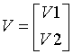
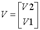
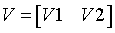
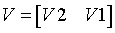

Intel® oneAPI Math Kernel Library Developer Reference - Fortran
Applies a real or complex "triangular-pentagonal" blocked reflector to a real or complex matrix, which is composed of two blocks.
call stprfb(side, trans, direct, storev, m, n, k, l, v, ldv, t, ldt, a, lda, b, ldb, work, ldwork)
call dtprfb(side, trans, direct, storev, m, n, k, l, v, ldv, t, ldt, a, lda, b, ldb, work, ldwork)
call ctprfb(side, trans, direct, storev, m, n, k, l, v, ldv, t, ldt, a, lda, b, ldb, work, ldwork)
call ztprfb(side, trans, direct, storev, m, n, k, l, v, ldv, t, ldt, a, lda, b, ldb, work, ldwork)
call tprfb(t, v, a, b[, direct][, storev][, side][, trans])
The ?tprfb routine applies a real or complex "triangular-pentagonal" block reflector H, HT, or HH from either the left or the right to a real or complex matrix C, which is composed of two blocks A and B.
The block B is m-by-n. If side = 'R', A is m-by-k, and if side = 'L', A is of size k-by-n.
The pentagonal matrix V is composed of a rectangular block V1 and a trapezoidal block V2. The size of the trapezoidal block is determined by the parameter l, where 0≤l≤k. if l=k, the V2 block of V is triangular; if l=0, there is no trapezoidal block, thus V = V1 is rectangular.
| direct='F' | direct='B' | |
| storev='C' |  V2 is upper trapezoidal (first l rows of k-by-k upper triangular) |
 V2 is lower trapezoidal (last l rows of k-by-k lower triangular matrix) |
| storev='R' |  V2 is lower trapezoidal (first l columns of k-by-k lower triangular matrix) |
 V2 is upper trapezoidal (last l columns of k-by-k upper triangular matrix) |
| side='L' | side='R' | |
| storev='C' | V is m-by-k V2 is l-by-k |
V is n-by-k V2 is l-by-k |
| storev='R' | V is k-by-m V2 is k-by-l |
V is k-by-n V2 is k-by-l |
CHARACTER*1.
= 'L': apply H, HT, or HH from the left,
= 'R': apply H, HT, or HH from the right.
CHARACTER*1.
= 'N': apply H (no transpose),
= 'T': apply HT (transpose),
= 'C': apply HH (conjugate transpose).
CHARACTER*1.
Indicates how H is formed from a product of elementary reflectors:
= 'F': H = H(1) H(2) . . . H(k) (Forward),
= 'B': H = H(k) . . . H(2) H(1) (Backward).
CHARACTER*1.
Indicates how the vectors that define the elementary reflectors are stored:
= 'C': Columns,
= 'R': Rows.
INTEGER. The total number of rows in the matrix B (m ≥ 0).
INTEGER. The number of columns in B (n ≥ 0).
INTEGER. The order of the matrix T, which is the number of elementary reflectors whose product defines the block reflector. (k ≥ 0)
INTEGER. The order of the trapezoidal part of V. (k ≥ l ≥ 0).
REAL for stprfb
DOUBLE PRECISION for dtprfb
COMPLEX for ctprfb
COMPLEX*16 for ztprfb.
DIMENSION (ldv, k) if storev = 'C',
DIMENSION (ldv, m) if storev = 'R' and side = 'L',
DIMENSION (ldv, n) if storev = 'R' and side = 'R'.
The pentagonal matrix V, which contains the elementary reflectors H(1), H(2), ..., H(k).
INTEGER. The leading dimension of the array v.
If storev = 'C' and side = 'L', at least max(1, m).
If storev = 'C' and side = 'R', at least max(1, n).
If storev = 'R' , at least k.
REAL for stprfb
DOUBLE PRECISION for dtprfb
COMPLEX for ctprfb
COMPLEX*16 for ztprfb.
Array size (ldt, k). The triangular k-by-k matrix T in the representation of the block reflector.
INTEGER. The leading dimension of the array t (ldt ≥ k).
REAL for stprfb
DOUBLE PRECISION for dtprfb
COMPLEX for ctprfb
COMPLEX*16 for ztprfb.
DIMENSION (lda, n) if side = 'L',
DIMENSION (lda, k) if side = 'R'.
The k-by-n or m-by-k matrix A.
INTEGER. The leading dimension of the array a.
If side = 'L', at least max(1, k).
If side = 'R', at least max(1, m).
REAL for stprfb
DOUBLE PRECISION for dtprfb
COMPLEX for ctprfb
COMPLEX*16 for ztprfb.
Array size (ldb, n), the m-by-n matrix B.
INTEGER. The leading dimension of the array b (ldb ≥ max(1, m)).
REAL for stprfb
DOUBLE PRECISION for dtprfb
COMPLEX for ctprfb
COMPLEX*16 for ztprfb.
DIMENSION (ldwork, n) if side = 'L',
DIMENSION (ldwork, k) if side = 'R'.
Workspace array.
INTEGER. The leading dimension of the array work.
If side = 'L', at least k.
If side = 'R', at least m.
Contains the corresponding block of H*C, HT*C, HH*C, C*H, C*HT, or C*HH.
Contains the corresponding block of H*C, HT*C, HH*C, C*H, C*HT, or C*HH.
INTEGER. If info = 0, the execution is successful.
If info < 0, the i-th parameter had an illegal value.
If info = -1011, memory allocation error occurred.